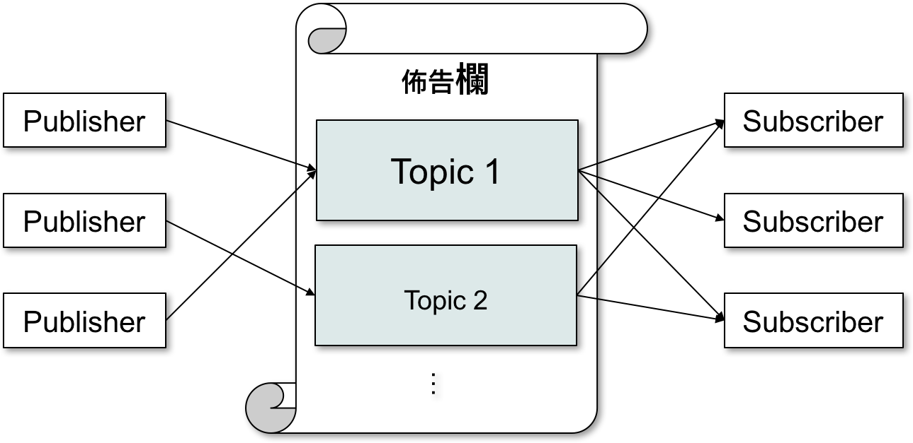
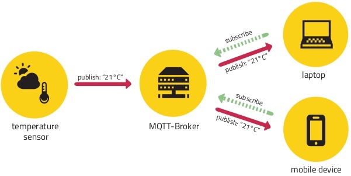
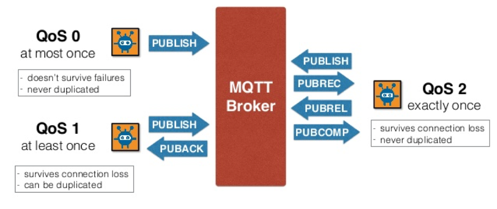

MQTT是為物聯網所設計的 M2M 通訊協定，網路頻寬與硬體需求非常少，是極為輕便的通訊協議。
MQTT 基本介紹
MQTT(Message Queuing Telemetry Transport，訊息佇列遙測傳輸)是為物聯網所設計的M2M通訊協定，其對於網路頻寬與硬體需求非常少，是極為輕便的通訊協議。
MQTT通訊協議已經在2014年經過制定電子商業標準協會(OASIS)程序，成為推薦的物聯網傳輸協議標準。其協議是基於TCP連線，提供不同QoS(Quality of Service，傳輸服務質量)層級的訊息傳遞，此技術可簡化、加速各設備間各種訊息的交流，並可確保於安全、可靠的資訊傳輸情況下完成通訊，所以我覺得MQTT有極大的潛力成為標準的物聯網通訊協議。
Source: MQTT Official Website
MQTT 特色
MQTT 是專為物聯網所設計的 M2M 通訊協定，其有以下特色：
- 基於常用的TCP/IP連線
- 使用發佈與訂閱的訊息傳送機制
- 提供三種不同的傳送服務質量QoS(Quality of Service)
- 訊息標頭檔大小固定為 2 Byte，減少封包傳送時的負擔，同時減少網路所需之頻寬
- 最後遺囑(Last Will and Testament)機制，當 Publisher 和 Broker 之間發生異常斷線時，通知有訂閱此 Will Topic 的 Subscriber。
- 主題萬用字元(Topic Wildcard Characters)在訂閱時可以使用特殊字元一次訂閱多個主題。
訊息傳遞原理
MQTT 使用發佈(Publish)/訂閱 (Subscribe)的訊息傳送機制，此機制中包含 4 個主要的元素：
- 主題(
Topic) - 發佈者(
Publisher) - 訊息中繼站 (
Broker) - 訂閱者(
Subscriber)
Publisher 為訊息的來源，傳送夾帶有 Topic 資訊的訊息至 Broker，Subcriber向Broker索取想要接受到之訊息的Topic。整個MQTT通訊流程架構如下圖：

舉個例來說，現在需要製作一溫度感測系統，使用MQTT的流程即從溫度感測器(Publisher)發送溫度訊息至中繼站(Broker)中Temp的佈告欄(Topic)上，接著透過使用筆電或手機(Subscriber)接收溫度訊息，整套溫度感測系統流程圖如下：

傳送服務質量QoS
MQTT 提供三種訊息傳送服務質量QoS(Quality of Service)，大家可以想成_訊息的重要程度_，或參考以下表格及圖片：
| 訊息單向發送，故不保證一定會送達，可能會丟失 | 訊息發送後會確保至少得到一次回應 | 訊息發送後會等待回傳的訊號，得到該訊號後會再回傳告知已收到，利用此double check的方式嚴格確保訊息只送達一次 | |
| 平信 | 掛號信 | 簽收包裹 | |
| 感測器 | Email、早期的FB messanger | 警報、繳費系統以及現在的FB messanger |

Source: MQTT QoS
MQTT基本的介紹到這邊，接下來的實作內容請於下一章節繼續探索摟～